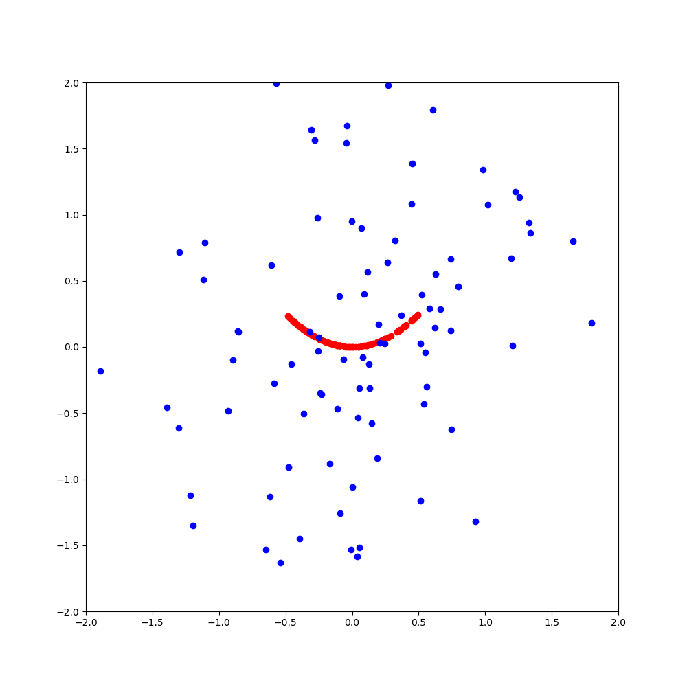

Cat and Dog Example
The keras project includes an example for object recognition:
https://keras.io/examples/vision/image_classification_from_scratch/
At the top of the page, a note says:
This example uses Keras 3.
we will try to install the most current packages as of December 2024 to run this example
In order to get keras version 3, we need to install a tensorflow version 2.16 or later.
Python Environment and Package Versions
conda vision environment
Creating a defined environment
conda create -n vision python=3.10
Then activate this environment before installing packages!
conda activate vision
Install specific packages:
conda install -c conda-forge tensorflow=2.17.0 -y
conda install -c conda-forge matplotlib=3.10.0 -y
conda install -c conda-forge pandas=2.2.3 -y
conda install -c conda-forge progress
conda install -c conda-forge pydot -y
conda install -c conda-forge tensorflow-datasets -y
Notes:
When I install python version 3.13.1, then conda will not let me install tensorflow 2.17.
(Error LibMambaUnsatisfiableError: Encountered problems while solving:
- nothing provides __cuda needed by tensorflow-2.17.0 )
However, python 3.10 works with tensorflow 2.17
Install yolo5
https://github.com/ultralytics/yolov5
mkdir local_data
cd local_data
git clone https://github.com/ultralytics/yolov5
cd yolov5
pip install -r requirements.txt
pip install ninja
This will also install PyTorch which will be used in later examples.
stylegan2
The video generation part of the code of Jeff Heaton's class_09_4_facial_points requires that PyTorch and OpenCV
are installed.
conda create -n stylegan2 python=3.13
Then activate this environment before installing packages!
conda activate stylegan2
Install packages:
conda install -c conda-forge pytorch torchvision torchaudio -y
pip installs:
pip install https://github.com/podgorskiy/dnnlib/releases/download/0.0.1/dnnlib-0.0.1-py3-none-any.whl
pip install requests
pip install legacy
pip install imageio
pip install tqdm
stylegan3
https://github.com/NVlabs/stylegan3
conda environment: stylegan3
mkdir local_data
cd local_data
git clone https://github.com/NVlabs/stylegan3.git
cd stylegan3
conda env create -f environment.yml
conda install ipython
Download stylegan3
mkdir local_data
cd local_data
git clone https://github.com/NVlabs/stylegan3.git
Download packages
cd stylegan3
conda env create -f environment.yml
conda activate stylegan3
To utilize datasets from huggingface:
pip install datasets
To prevent the error "ModuleNotFoundError: No module named 'psutil'":"
conda install -c conda-forge psutil -y
To run the Jeff Heaton examples in chapter 7:
conda install ipython
conda install -c conda-forge jupyter -y
Don't
conda install -c conda-forge tensorboard -y
because it causes the training to crash with
AttributeError: module 'distutils' has no attribute 'version'
On Ubuntu Server 24.04, after installing as above, when calling train.py, get error
Error building extension 'bias_act_plugin'
Solution:
Remove ninja that was installed using the environment.yml file by
conda remove ninja
This will somehow update a few packages and update pytorch from 1.9.1 to 2.5.1
and install ninja via conda without giving version number
conda install -c conda-forge ninja -y
https://stackoverflow.com/questions/75515629/how-to-build-the-bias-act-plugin-extension-for-stylegan3
Preparing flickrfaces dataset
Download the flickrfaces dataset:
https://github.com/NVlabs/ffhq-dataset/tree/master
Running the download script leads to an error:
OSError: [Errno Incorrect file size] ffhq-dataset-v2.json
Solution:
https://github.com/NVlabs/stylegan2-ada/issues/115
Open a browser at
https://drive.usercontent.google.com/download?id=16N0RV4fHI6joBuKbQAoG34V_cQk7vxSA&export=download
Download the file named ffhq-dataset-v2.json.
Place the file ffhq-dataset-v2.json and the script named download_ffhq.py in the same directory
Run the script with
python3 download_ffhq.py --json --images
Reproducability
This article describes the design of a simple, 1-dimensional GAN:
How to Develop a 1D Generative Adversarial Network From Scratch in Keras
https://machinelearningmastery.com/how-to-develop-a-generative-adversarial-network-for-a-1-dimensional-function-from-scratch-in-keras/
The real samples are basically represented by pairs of values that lie on a parabola

Environment:
the x-values for the real samples are random.
Observations:
Train GAN on computer A with original code, save model to M1.h5, predictions:
0 1 pred
0 0.2 0.00 0.813885
1 0.2 0.01 0.822533
2 0.2 0.02 0.830599
3 0.2 0.03 0.836829
4 0.2 0.04 0.842578
5 0.2 0.05 0.848162
6 0.2 0.06 0.848473
7 0.2 0.07 0.841271
8 0.2 0.08 0.833794
9 0.2 0.09 0.826038
copy model M1.h5 to computer B and load it, predictions:
0 1 pred
0 0.2 0.00 0.813885
1 0.2 0.01 0.822533
2 0.2 0.02 0.830599
3 0.2 0.03 0.836829
4 0.2 0.04 0.842578
5 0.2 0.05 0.848162
6 0.2 0.06 0.848473
7 0.2 0.07 0.841271
8 0.2 0.08 0.833794
9 0.2 0.09 0.826038
So the predictions are the same on different computers when the saved model is the same.
New Training run of GAN on computer A with original code, save model to M2.h5, predictions:
0 1 pred
0 0.2 0.00 0.784457
1 0.2 0.01 0.792328
2 0.2 0.02 0.796565
3 0.2 0.03 0.799720
4 0.2 0.04 0.802838
5 0.2 0.05 0.803929
6 0.2 0.06 0.800718
7 0.2 0.07 0.797405
8 0.2 0.08 0.794052
9 0.2 0.09 0.790657
Loading model M2.h5 on computer B gives the same predictions as on computer A:
0 1 pred
0 0.2 0.00 0.784457
1 0.2 0.01 0.792328
2 0.2 0.02 0.796565
3 0.2 0.03 0.799720
4 0.2 0.04 0.802838
5 0.2 0.05 0.803929
6 0.2 0.06 0.800718
7 0.2 0.07 0.797406
8 0.2 0.08 0.794052
9 0.2 0.09 0.790657
Between training runs, the predictions are different.
Convergence Behavior
During training, real samples prediction accuracy starts low and fake samples prediction accuracy starts
high.
At around epoch 400, the real prediction accuracy becomes a steady 1.00 and the fake prediction hovers around
0.9
epoch 0 acc_real 0.016 acc_fake 0.938
..
epoch 400 acc_real 1.000 acc_fake 0.844
..
epoch 993 acc_real 1.000 acc_fake 0.891
epoch 994 acc_real 1.000 acc_fake 0.844
epoch 995 acc_real 1.000 acc_fake 0.859
epoch 996 acc_real 1.000 acc_fake 0.781
epoch 997 acc_real 1.000 acc_fake 0.875
epoch 998 acc_real 1.000 acc_fake 0.906
epoch 999 acc_real 1.000 acc_fake 0.859
non-random x-values
In the code for generate_real_samples(), the x-values are random.
What happens if we use the same x-values in this function?